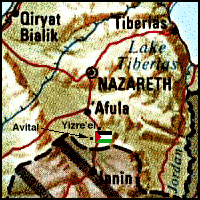

Destroyed Palestinian Villages:
A Reign Of Terror & Systematic Expulsion
Zir'in

Zir'in stood on a small plateau abutting the Faqqu'a Mountains (approx. location at  on map). The plateau was not much higher than the surrounding Marj ibn Amir Plain on its western and southern sides. The northern and eastern sides sloped towards Wadi al-Jalud. Zir'in--the northernmost village in the district--was located on a lateral road link between two highways, one leading to Jenin and another to Baysan (to the southeast). The site has been identified with the Canaanite town of Yizre'el, mentioned in the Bible (Joshua 17:16). The ancient town's name contained the common Semitic root zara', with the meaning, "to sow." The later Hebrew name for the town, Yizre'-'el, meant "May God give seed," and the Arab name for the village, Zir'in, had a similar connotation. Crusader sources referred to Zir'in as Le Petit Gerin, to differentiate it from Jenin, which they called Le Grand Gerin. In A.D. 1260, the Mamluks, under the leadership of al-Zahir Baybars, halted the advance of the Mongol juggernaut in the decisive battle of 'Ayn Jalut near the spring of 'Ayn Jalut (or Jalud), which lay midway between Zir'in and the adjacent village of Nuris. In 1596, Zir'in was a village in the nahiya of Jenin (liwa' of Lajjun), with a population of twenty-two. It paid taxes on a number of crops, including wheat and barley, as well as on other types of property, such as goats and beehives.
on map). The plateau was not much higher than the surrounding Marj ibn Amir Plain on its western and southern sides. The northern and eastern sides sloped towards Wadi al-Jalud. Zir'in--the northernmost village in the district--was located on a lateral road link between two highways, one leading to Jenin and another to Baysan (to the southeast). The site has been identified with the Canaanite town of Yizre'el, mentioned in the Bible (Joshua 17:16). The ancient town's name contained the common Semitic root zara', with the meaning, "to sow." The later Hebrew name for the town, Yizre'-'el, meant "May God give seed," and the Arab name for the village, Zir'in, had a similar connotation. Crusader sources referred to Zir'in as Le Petit Gerin, to differentiate it from Jenin, which they called Le Grand Gerin. In A.D. 1260, the Mamluks, under the leadership of al-Zahir Baybars, halted the advance of the Mongol juggernaut in the decisive battle of 'Ayn Jalut near the spring of 'Ayn Jalut (or Jalud), which lay midway between Zir'in and the adjacent village of Nuris. In 1596, Zir'in was a village in the nahiya of Jenin (liwa' of Lajjun), with a population of twenty-two. It paid taxes on a number of crops, including wheat and barley, as well as on other types of property, such as goats and beehives.
In the late nineteenth century Zir'in consisted of twenty to thirty houses. The most prominent family of the village resided in a tall, almost tower-like, house in the center of the village. A well and a spring supplied the village with water. The village was the hometown of a leader of the 1936 Palestinian revolt, Mahmud Salim. Most of Zir'in's houses were built of mud, and were crowded closely together, separated by narrow alleys. House construction increased during the British Mandate, and many existing homes were improved. The people of the village were Muslims. A mosque that had been renovated by al-Zahir Baybars, a small marketplace, and a school founded under the Ottomans were located at the village center.
The villagers cultivated grain, vegetables, and fruits. In 1944/45 a total of 20,964 dunums were allocated to cereals.
In March 1948, the Arab Liberation Army reported that "the Jews have been trying since the 17th of this month to eliminate these villages [Zir'in and Nuris]." That spate of attacks was apparently suspended on 19 March for about ten days as a result of heavy Haganah losses. On 19 April, Palmach headquarters issued an order which read, in part: "With the capture of Zirin, most of the village's houses must be destroyed while [some houses] should be left intact for accommodation and defense." Those orders are quoted by Israeli historian Benny Morris, who indicates that the village was occupied in a military attack.
According to The History of the War of Independence, Zir'in was occupied on 28 May 1948 by the Fourth Battalion of the Golani Brigade, the same unit that occupied nearby Nuris. This took place in the wake of the occupation of the Baysan Valley to the northeast and as a prelude to an attack on Jenin. The New York Times quoted an official Israeli army statement on 28 May announcing the capture of the village, adding that it lay "on one of the boundary lines set up in the United Nations partition scheme." The attackers met with "little resistance" in Zir'in, according to the dispatch, which relied on Israeli sources in Haifa. Another New York Times report stated that Arab forces counterattacked two days later (30 May), apparently without success. There is also evidence of two other abortive attempts to regain control of the village in July. Iraqi forces tried to recapture Zir'in on 10 July, according to The History of the War of Independence, but were unable to break through Israeli defense lines. The New York Times reported a third Iraqi attack on 19 July, the day after the second truce began. The armistice line was eventually drawn to the south of Zir'in.
Israel established the settlement of Yizre'el on the northwestern side of the village site in 1948. Avital was built on what were traditionally village lands in 1953 (Return to map above).
Only one dilapidated building remains. The site is overgrown with grass, thorns, and cacti, interspersed with prominent piles of stones. An Israeli memorial surrounded by trees has been erected on the site and is surrounded by trees. Cacti, an old well, and pomegranate & almond trees also mark the site. The site itself and the hilly lands around it serve as grazing areas, while the plains are used for agriculture.
Return to Destroyed Palestinian Villages index.
| About CRDPS | Race Against Time Project | CRDPS Archives |
| Complete Guide to Palestine's Websites - Academic & Research listings |
Material compiled by Rami Nashashibi, June 1996.
Page design by Birzeit Web Team, March 1997.
Center for Research and Documentation of Palestinian Society, Birzeit University, P.O. Box 14, Birzeit, West Bank, Palestine.
Tel: +972-2-998-2975, Fax: +972-2-995-2975, E-mail: center@research.birzeit.edu.